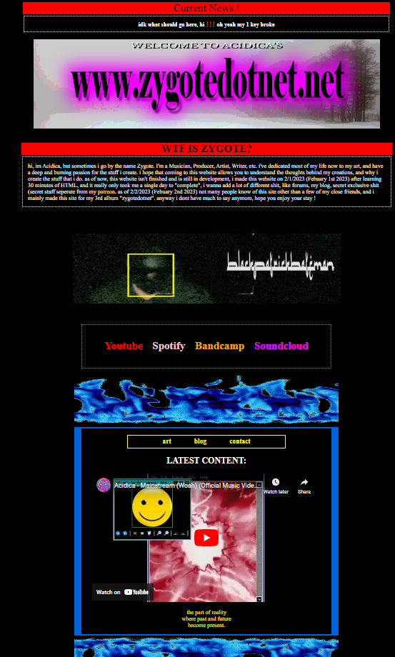

it's currently 1:56 am, i've been updating the site a shit ton, it originally looked like shit before the recent update, i'd put up a picture rn but i don't feel like it.
as i typed that out i felt like doing it. here's how it looked before the update.

it looked alright for the time but the new version is much better, i changed the red to pink and made the boarders smaller, i also added a boarder around the whole webpage it looks much better now. i'll be honest i didn't rlly know what to put here but i decided while im up and updating the site i might as well write some shit, i love writing but i rarely do it. anyway, i been thinking in the future maybe everytime i update the site i'll add to the blog, it makes sense honestly, keeps track of the making of this website. i honestly wish i would've wrote more about the process creating the contact option, which thinking about it i guess i will now.
i spent more than 8 hours of my day searching through tutorials on how to make an email contact section, thing is the tutorials were fine, i just kept getting this 405 error that i couldn't find ANY FIXES FOR NO MATTER WHAT I DID i swear it was probably a problem on my end i dont fucking know but it was so fucking annoying, when i first created the email list i used this forum service, but i didn't like how it lumped all new emails into eachother. eventually tho i did find a video which saved everything yo, and thank god i was on the verge of giving up which i acc did at some point.
another thing, sorry for the shitty typing on these, im just gonna type oout what im feeling honestly and im not gonna pay too much attention to the punctuation and shit cause why would i loooololololololokay anyay i think that's it goodnight